정보처리산업기사 (2007-05-13 기출문제)
1과목: 데이터 베이스
1. 다음 설명이 의미하는 것은?
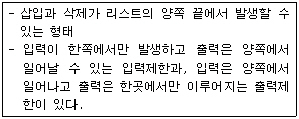
- 스택
- 큐
- 다중스택
- 데크
(정답률: 61%)

2. 파일 조직 기법 중 순차 파일에 대한 설명으로 옳지 않은 것은?
- 레코드 사이에 빈 공간이 존재하지 않으므로 기억 장치의 효율적 이용이 가능하다.
- 레코드들이 순차적으로 처리되므로 대화식 처리보다 일괄 처리에 적합한 구조이다.
- 필요한 레코드를 삽입, 삭제하는 경우 파일을 재구성해야 하므로 파일 전체를 복사해야 한다.
- 데이터 검색 시 검색 효율이 높다.
(정답률: 71%)
3. 스택(stack)의 삽입(insert) 알고리즘이다. ( ) 안의 내용으로 옳게 짝지어진 것은? (단, n : 스택의 크기, TOP : 스택 포인터, S : 스택의 이름)
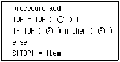
- ① + ② > ③ underflow
- ① - ② < ③ overflow
- ① + ② > ③ overflow
- ① + ② < ③ overflow
(정답률: 73%)
4. 다음 중 SQL 정의어에 포함되지 않는 명령어는?
- CREATE
- SELECT
- ALTER
- DROP
(정답률: 81%)
5. SQL의 기술이 옳지 않은 것은?
- SELECT....FROM....WHERE....
- INSERT....INTO....VALUES....
- UPDATE....TO....WHERE...
- DELETE....FROM....WHERE....
(정답률: 80%)
6. 데이터베이스의 특성 중 다음 설명에 해당하는 것은?
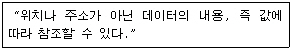
- Concurrent sharing
- Real-time accessibility
- Content reference
- Continuous evolution
(정답률: 74%)
7. 뷰(View)의 삭제 시 사용되는 SQL 명령은?
- DELETE
- DROP
- OUT
- CLEAR
(정답률: 85%)
8. What is an ordered list in which all insertion and deletions are made at one end, called the top?
- Queue
- Array
- Stack
- Linked list
(정답률: 74%)
9. E-R 다이어그램에서 타원형은 무엇을 나타내는가?
- 개체
- 관계
- 링크
- 속성
(정답률: 84%)
10. 목표 DBMS에 맞는 스키마를 설계하고 트랜잭션의 인터페이스를 설계하는 것은 데이터베이스 설계 단계 중 어디에 해당하는가?
- 요구 조건 분석 단계
- 개념적 설계 단계
- 논리적 설계 단계
- 물리적 설계 단계
(정답률: 61%)
11. 데이터베이스의 정의로 옳지 않은 것은?
- 동일 데이터의 중복성을 최소화해야 한다.
- 컴퓨터가 접근할 수 있는 저장 매체에 저장된 자료이다.
- 조직의 존재 목적이나 유용성 면에서 존재 가치가 확실한 필수적 데이터이다.
- 정보 소유 및 응용에 있어 지역적으로 유지되어야 한다.
(정답률: 81%)
12. 다음 내용의 특징을 갖춘 File Organization은 무엇인가?
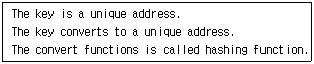
- Sequential file
- Direct file
- Index file
- Heap file
(정답률: 44%)
13. DBA의 역할로 거리가 먼 것은?
- 데이터베이스 스키마 정의
- 사용자 요구 응용프로그램 작성
- 보안 정책과 무결성(integrity)유지
- 예비조치(backup)와 회복(recovery)에 대한 절차수립
(정답률: 70%)
14. 시스템 카탈로그에 대한 설명으로 옳지 않은 것은?
- 시스템 자체에 관련 있는 다양한 객체에 관한 정보를 포함하는 시스템 데이터베이스이다.
- 데이터 사전이라고도 한다.
- 일반 사용자는 SQL을 이용하여 내용을 검색해 볼 수 없다.
- 기본 테이블, 뷰, 인덱스, 패키지, 접근 권한 등의 정보를 저장한다.
(정답률: 88%)
15. 외래키(foreign key)와 가장 직접적으로 관련된 제약조건은 어느 것인가?
- 개체 무결성
- 객체 무결성
- 참조 무결성
- 널 무결성
(정답률: 79%)
16. 후위 표기(postfix)식이 다음과 같을 때 식의 계산 값은?(단, 표현된 수치는 한 자리 숫자를 의미한다.)
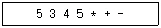
- 30
- 20
- 14
- -18
(정답률: 67%)
17. 데이터베이스의 설계순서를 바르게 나열한 것은?
- 요구조건 분석-물리적 설계-논리적 설계-개념적 설계
- 요구조건 분석-논리적 설계-개념적 설계-물리적 설계
- 요구조건 분석-개념적 설계-논리적 설계-물리적 설계
- 요구조건 분석-논리적 설계-물리적 설계-개념적 설계
(정답률: 89%)
18. 제 2정규형에서 제 3정규형이 되기 위한 조건은?
- 부분 함수 종속 제거
- 이행 함수 종속 제거
- 원자 값이 아닌 도메인을 분해
- 결정자가 후보키가 아닌 함수 종속 제거
(정답률: 87%)
19. 다음의 중위(infix) 표기식을 전위(prefix) 표기식으로 옳게 변환한 것은?
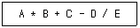
- - + * A B C / D E
- A B * C + D E / -
- A B C D E * + - /
- * + - / A B C D E
(정답률: 58%)
20. 릴레이션의 특징이 아닌 것은?
- 하나의 릴레이션에서 튜플의 순서는 있다.
- 모든 튜플은 서로 다른 값을 갖는다.
- 각 속성은 릴레이션 내에서 유일한 이름을 가진다.
- 모든 속성 값은 원자 값이다.
(정답률: 84%)
2과목: 전자 계산기 구조
21. 64가지의 각기 다른 자료를 나타내려고 하면 최소한 몇 개의 비트(bit)가 필요한가?
- 1
- 3
- 5
- 6
(정답률: 81%)
22. 하나의 AND회로와 EX-OR 회로를 조합한 회로는?
- 반가산기
- 전가산기
- 래치
- 플립플롭
(정답률: 76%)
23. 컴퓨터 명령어(instruction)의 주소 지정방식 중 기억장치에 최소 2번 접근(access)해야 오퍼랜드(operand)를 얻을 수 있는 것은?
- 직접 주소지정방식(direct addressing)
- 간접 주소지정방식(indirect addressing)
- 상대 주소지정방식(relative addressing)
- 즉시 주소지정방식(immediate addressing)
(정답률: 75%)
24. 다음 3가지의 연산자(operator)가 혼합되어 나오는 식에서 시행(연산) 순서는? (단, 가장 왼쪽에 기술된 것이 가장 우선순위가 높다.)
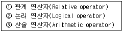
- ①→②→③
- ②→①→③
- ③→①→②
- ①→③→②
(정답률: 55%)
25. dynamic RAM에 대한 설명 중 옳지 않은 것은?
- static RAM에 비해서 집적도가 높다.
- 기억된 정보를 보관하기 위해 주기적인 refresh가 필요하다.
- 일반적으로 static RAM에 비하여 메모리 접근 속도가 느리다.
- 캐시메모리에 주로 사용된다.
(정답률: 62%)
26. 내용에 의하여 액세스 되는 메모리 장치는?
- Associative memory
- Buffer
- Virtual memory
- Cache memory
(정답률: 73%)
27. 코드를 설계할 때 고려해야 할 사항으로 옳지 않는 것은?
- 자료 항목이 증가할 경우, 추가가 쉽도록 한다.
- 컴퓨터에 의한 처리가 편하도록 한다.
- 많은 자리수로 적은 자료의 항목을 나타내도록 한다.
- 사람이 식별하기 쉽도록 한다.
(정답률: 85%)
28. 디지털 코드 중에서 에러 검출 및 교정이 가능한 코드는?
- 그레이(Gray) 코드
- 해밍(Hamming) 코드
- 3초과(Excess-3) 코드
- BCD코드
(정답률: 83%)
29. 16진수(BC.D)를 8진수로 표현한 것은?
- (274.15)8
- (274.45)8
- (274.61)8
- (274.64)8
(정답률: 58%)
30. 10진수 12와 같지 않은 것은?
- 2진수 1100
- 5진수 22
- 8진수 14
- 16진수 B
(정답률: 77%)
31. 입출력 장치와 주기억 장치를 연결하는 중개 역할을 담당하는 부분을 무엇이라 하는가?
- bus
- buffer
- channel
- console
(정답률: 75%)
32. 플립플롭(Flip-Flop) 회로의 설명으로 틀린 것은?
- 1비트의 정보량을 기억하는 기능을 가진다.
- 레지스터의 구성 회로로 널리 사용된다.
- 대표적인 조합 논리회로에 속한다.
- 어느 한 상태에서 다른 상태로 동작하기 위해서는 외부의 영향이 작용하여야 한다.
(정답률: 54%)
33. 다음은 어떤 논리회로인가?
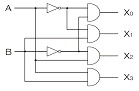
- 인코더
- 디코더
- RS 플립플롭
- JK 플립플롭
(정답률: 59%)
34. 부호가 붙어있는 십진수 -1을 2의 보수 표시법으로 표현하면?
- 00000001
- 10000001
- 10000010
- 11111111
(정답률: 55%)
35. 부프로그램(Sub-program)에서 주프로그램(Main-program)으로 복귀할 때 필요한 주소를 기억하거나 산술 연산을 할 때 변수와 연산자를 기억시키는데 적합한 것은?
- Queue
- Dequeue
- Stack
- Buffer
(정답률: 71%)
36. 다음 명령어 중 형식이 다른 것은?
- ADD A
- SUB A
- PUSH A
- LOAD A
(정답률: 48%)
37. 컴퓨터에서 음수를 표현하는 방법으로 옳지 않은 것은?
- 부호와 절대값 표시
- 부호화된 1의 보수 표시
- 부호화된 2의 보수 표시
- 부호화된 16의 보수 표시
(정답률: 73%)
38. 주기억장치의 용량이 512KB인 컴퓨터에서 32비트의 가상주소를 사용하는데 페이지의 크기가 1K워드이고 1워드가 4바이트라면 주기억장치의 페이지 수는 몇 개인가?
- 32개
- 64개
- 128개
- 512개
(정답률: 69%)
39. 명령수행을 위한 메이저 상태에 대한 설명 중 올바른 것은?
- 실행상태는 간접주소 방식의 경우에만 수행된다.
- 기억장치내의 명령어를 가져오는 것을 인출(fetch) 상태라 한다.
- CPU의 현재 상태를 보관하기 위한 기억장치 접근을 Indirect 상태라 한다.
- 명령어의 종류를 판별하는 것은 Indirect 상태라 한다.
(정답률: 70%)
40. 기억장치로부터 명령어를 인출하여 해독하고, 해독된 명령어를 실행하기 위해 제어신호를 발생시키는 각 단계의 세부 동작을 무엇이라 하는가?
- Fetch operation
- Control operation
- Macro operation
- Micro operation
(정답률: 57%)
3과목: 시스템분석설계
41. 다음의 모듈 결합성(module coupling) 중 그 결합력이 가장 약한 것은?
- 내용 결합성
- 자료 결합성
- 공통 결합성
- 외부 결합성
(정답률: 43%)
42. 파일 설계 순서로 옳은 것은?
- 파일특성조사→파일항목검토→파일매체검토→파일편성법검토
- 파일항목검토→파일특성조사→파일매체검토→파일편성법검토
- 파일편성법검토→파일항목검토→파일특성조사→파일매체검토
- 파일매체검토→파일특성조사→파일항목검토→파일편성법검토
(정답률: 63%)
43. 코드 설계 순서로 옳은 것은?
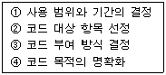
- ④→①→②→③
- ①→②→④→③
- ④→②→①→③
- ②→④→①→③
(정답률: 54%)
44. 파일 편성 중 랜덤 편성에 대한 설명으로 옳지 않은 것은?
- 특정 레코드 접근이 직접가능하다.
- 대화형 처리에 적합하다.
- 주소 계산 방법에는 직접 주소법, 디렉토리 조사법, 해싱 함수 이용법 등이 있다.
- 충돌 발생의 염려가 없으므로 예비 기억 공간의 확보가 필요없다.
(정답률: 77%)
45. 객체(Object)에 관한 설명으로 옳지 않은 것은?
- 객체는 데이터 구조와 그 위에서 수행되는 함수들을 가지고 있는 소프트웨어 모듈이다.
- 객체는 캡슐화와 데이터 추상화로 설명된다.
- 객체는 자신의 상태를 가지고 있고, 그 상태는 어떠한 경우에도 변하지 않는다.
- 객체는 데이터와 그 데이터를 조작하기 위한 연산들을 결합시킨 실체다.
(정답률: 68%)
46. 프로세스 설계상 유의 사항으로 거리가 먼 것은?
- 프로세스 전개의 사상을 통일한다.
- 하드웨어의 기기 구성, 처리 성능을 고려한다.
- 운영체제를 중심으로 한 소프트웨어의 효율성을 고려한다.
- 오류에 대비한 체크 시스템의 고려는 필요 없으며, 분류 처리를 가능한 최대화 한다.
(정답률: 83%)
47. 마스터 파일의 데이터를 트랜잭션 파일에 의해 추가, 삭제, 교환하여 새로운 마스터 파일을 작성하는 처리 패턴을 무엇이라고 하는가?
- 병합(merge/collate)
- 갱신(update)
- 대조(matching)
- 변환(conversion)
(정답률: 83%)
48. 구조적 분석도구에 해당하지 않는 것은?
- 자료 흐름도(data flow diagram)
- 소단위 명세서(mini specification)
- 구조 도표(structure chart)
- 자료 사전(data dictionary)
(정답률: 38%)
49. IPT의 기법과 거리가 먼 것은?
- 구조적 설계
- HIPO
- 구조적 코딩
- 상향식 프로그래밍
(정답률: 74%)
50. 시스템 문서화의 목적으로 거리가 먼 것은?
- 시스템 유지보수의 용이성 제공
- 시스템 추가 변경에 따른 혼란 방지
- 시스템 개발 절차 및 순서를 표준화하여 효율적인 작업수행
- 시스템 개발 시 보안 유지의 기능
(정답률: 79%)
51. 시스템의 특성 중 제어성과 가장 관련 깊은 것은?
- 최종 목표에 도달하고자 하는 특성
- 시스템변화에 스스로 대처할 수 있는 특성
- 정해진 목표를 달성하기 위해오류가 발생하지 않도록 사태를 감시하는 특성
- 관련된 다른 시스템과 상호 의존관계로 통합되는 특성
(정답률: 74%)
52. IPT 기법은 프로그램의 품질개선과 동시에 생산성을 향상시키기 위한 각종 기법을 총칭하는 것이다. 이 IPT 기법을 기술적인 측면과 관리적인 측면으로 구분할 경우 기술적인 측면에 포함되지 않는 것은?
- HIPO
- Walk-Through
- N-S 차트
- 의사기술언어(Pseudo Language)
(정답률: 43%)
53. 객체 지향 설계에서 자료와 연산들을 함께 묶어 놓는 일로써, 객체의 자료가 변조되는 것을 막으며 그 객체의 사용자들에게 내부적인 구현의 세부적인 내용들을 은폐 시키는 기능을 하는 것은?
- 상속화
- 추상화
- 클래스
- 캡슐화
(정답률: 80%)
54. 출력 방식 중 출력 시스템과 입력 시스템이 일치된 방식이며, 일단 출력된 정보가 다시 이용자의 손에 의해 입력되는 시스템은?
- 디스플레이 출력 시스템
- 턴 어라운드 시스템
- 파일 출력 시스템
- COM 시스템
(정답률: 83%)
55. 시스템 개발 단계 중 시스템 설계 단계에서 요구되는 사항으로 거리가 먼 것은?
- 기능 분석 방법에 대한 설계를 한다.
- 코드 체계에 대한 설계를 한다.
- 각 모듈의 논리적인 처리 절차를 설계한다.
- 파일의 구체적인 사양을 설계한다.
(정답률: 31%)
56. 컴퓨터 입력 단계 검증 방법 중 입력 자료의 특정 항목 합계 값을 미리 구해 놓고 입력 과정에서의 계산을 통해 얻은 합계와 비교하여 동일한 결과가 얻어지는가를 체크하는 방법은?
- 한계 체크(limit check)
- 형식 체크(format check)
- 일괄 합계 체크(batch total check)
- 검사 자리 체크(check digit check)
(정답률: 70%)
57. 코드에 대한 해독을 쉽게 하는 것으로 코드를 보는 순간 그 코드의 대상인 실체를 알 수 있도록 하는 코드의 기능은?
- 암호화 기능
- 연상 기능
- 간소화 기능
- 분류 기능
(정답률: 75%)
58. 다음과 같이 사용되는 코드는?
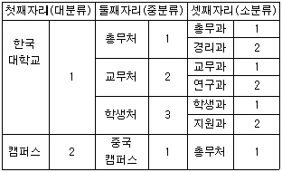
- 구분 코드(Block Code)
- 순차 코드(Sequence Code)
- 그룹 분류 코드(Group Classification Code)
- 합성 코드(Combined Code)
(정답률: 78%)
59. 문서화의 표준화 효과는 관리자 측면과 개발자 측면이 있다. 다음 중 개발자 측면의 효과로 기대할 수 없는 것은?
- 프로그램의 작성이 용이하다.
- 인원 투입 계획의 수립이 용이하다.
- 시스템 유지보수가 용이하다
- 소프트웨어 및 시스템 기본 기능의 이해가 편리하다.
(정답률: 60%)
60. 색인 순차 파일(Indexed Sequential File)에서 색인 영역(Index area)의 종류가 아닌 것은?
- Mater Index area
- Data Index area
- Cylinder Index area
- Track Index area
(정답률: 76%)
4과목: 운영체제
61. 운영체제를 기능적으로 분류했을 때 처리프로그램(processing program)에 해당하는 것으로만 짝지어진 것은?
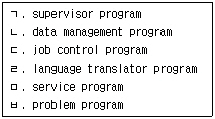
- ㄹ,ㅁ,ㅂ
- ㄱ,ㄴ,ㄷ
- ㄱ,ㅁ,ㅂ
- ㄷ,ㄹ,ㅁ
(정답률: 49%)
62. 교착상태의 해결 방법 중 은행 알고리즘과 가장 관련 깊은 것은?
- 회피(avoidance)
- 예방(prevention)
- 발견(detection)
- 회복(recovery)
(정답률: 73%)
63. UNIX 시스템의 특징이 아닌 것은?
- 온라인 대화형 시스템이다.
- 다중 작업 시스템이다.
- 다중 사용자 시스템이다.
- 이식성이 낮은 시스템이다.
(정답률: 81%)
64. HRN 스케줄링 기법 사용시 우선순위가 가장 높은 작업 번호는?
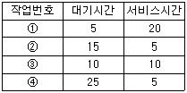
- ①
- ②
- ③
- ④
(정답률: 68%)
65. 구역성(locality)에 대한 설명으로 옳지 않은 것은?
- 시간구역성의 예로는 순환, 부프로그램, 스택 등이 있다.
- 구역성에는 시간구역성과 공간구역성이 있다.
- 어떤 프로세스를 효과적으로 실행하기 위해 주기억장치에 유지되어야 하는 페이지들의 집합이다.
- 프로세서들은 기억장치내의 정보를 균일하게 액세스 하는 것이 아니라, 어느 한 순간에 특정 부분을 집중적으로 참조한다.
(정답률: 58%)
66. Round-Robin 스케줄링에 대한 설명으로 틀린 것은?
- 프로세스들이 배당 시간내에 작업을 완료되지 못하면 폐기된다.
- 프로세스들이 중앙처리장치에서 시간량에 제한을 받는다.
- 시분할 시스템에 효과적이다.
- 선점형(preemptive) 기법이다.
(정답률: 64%)
67. 스케줄링, 기억장치 관리, 파일 관리, 입·출력 관리 등의 기능을 제공하는 유닉스 시스템의 핵심 부분은?
- Shell
- Kernel
- IPC
- Filter
(정답률: 79%)
68. 3페이지가 들어 갈 수 있는 기억장치에서 다음과 같은 순서로 페이지가 참조될 때 LRU 기법을 사용하면 페이지 부재결함(page fault)은 몇 번 일어나는가? (단, 현재 기억장치는 모두 비어 있다고 가정한다.)
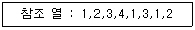
- 3
- 5
- 6
- 8
(정답률: 61%)
69. Process Control Block (PCB)의 내용이 아닌 것은?
- 프로세스의 현재 상태
- 프로세스의 식별자
- 프로세스의 우선순위
- 페이지 부재(page fault) 발생 횟수
(정답률: 78%)
70. 분산 운영체제에서 각 노드들이 point-to-point 형태로 중앙 컴퓨터에 연결되고 중앙 컴퓨터를 경유하여 통신하는 위상(topology)구조는?
- 성형(star) 구조
- 링(ring) 구조
- 계층(gierarchy) 구조
- 완전연결(fully connection) 구조
(정답률: 84%)
71. 기억장치의 관리 전략 중 배치(Placement)전략에 대한 설명으로 가장 타당한 것은?
- 새로 반입된 프로그램을 주기억장치의 어디에 위치시킬 것인가를 결정하는 전략
- 주기억장치에 넣을 다음 프로그램이나 데이터를 보조기억장치에서 주기억장치로 언제 가져올 것인가를 결정하는 전략
- 새로 주기억장치에 배치되어야 할 프로그램이 들어갈 장소를 마련하기 위해 어떤 프로그램이나 데이터를 제거할 지 결정하는 전략
- 실행 중인 프로그램에 의해 참조될 프로그램이나 데이터를 미리 예상하여 적재하는 전략
(정답률: 67%)
72. 운영체제의 목적이 아닌 것은?
- 사용자의 인터페이스 제공
- 컴퓨터 자원의 효율적 사용
- 응답 시간 및 반환 시간의 증가
- 컴퓨터의 신뢰성, 가용성, 운용성 증대
(정답률: 88%)
73. 임계 구역(Critical Section)에 대한 설명으로 옳지 않은 것은?
- 특정 프로세스가 독점해서는 안 된다.
- 하나의 프로세스만 접근 할 수 있다.
- 임계 구역 내에서의 작업은 신속하게 진행되어야 한다.
- 실행 중인 프로세스가 일정 시간 동안 참조하는 페이지의 집합을 의미한다.
(정답률: 71%)
74. 천재지변이나 사고로 인해 정보의 손실이나 파괴를 막기 위해 취할 수 있는 방법으로 가장 올바른 것은?
- 파일 시스템을 체계적으로 잘 정리한다.
- 백업(Back-up)을 주기적으로 실시하여 안전한 곳에 보관한다.
- 컴퓨터에 안전장치를 하고, 필요할 때만 조심해서 사용해야 한다.
- 사고는 컴퓨터가 가동될 때만 발생함으로 사용 후에는 컴퓨터 전원을 반드시 꺼 놓는다.
(정답률: 81%)
75. 분산 처리 시스템에 대한 설명으로 옳지 않은 것은?
- 사용자는 각 컴퓨터의 위치를 몰라도 자원 사용이 가능하다.
- 시스템의 점진적 확장이 용이하다.
- 중앙 집중형 시스템에 비해 시스템 설계가 간단하고 소프트웨어 개발이 쉽다.
- 연산속도, 신뢰성, 사용 가능도가 향상된다.
(정답률: 70%)
76. 병행 프로세스들의 고려 사항이 아닌 것은?
- 공유 자원을 상호 배타적으로 사용해야 한다.
- 병행 프로세스들 사이에는 협력 또는 동기화가 이루어져야 한다.
- 병행 프로세스들은 프로그래머가 외부적으로 스케줄링 할 수 없도록 한다.
- 교착상태를 해결해야 하며 병행 프로세스들의 병렬 처리도를 극대화해야 한다.
(정답률: 63%)
77. 페이지 교체 알고리즘 중 각 페이지 마다 2개의 비트, 즉 Reference Bit와 Modified Bit가 사용되는 것은?
- LRU
- LFU
- FIFO
- NUR
(정답률: 73%)
78. 페이지를 이용한 가상메모리 관리 시스템에서 페이지에 대한 설명으로 옳지 않은 것은?
- 한 페이지의 크기가 작을수록 더 많은 페이지 수가 필요하게 되고 이에 따라 PMT(Page Map Table)의 크기도 더 많이 요구된다.
- 페이지 크기가 작을수록 디스크 접근 횟수가 줄어들어 전체적인 입출력의 효율성이 증가된다.
- 프로그램이 지역성을 갖는 환경에서는 페이지의 크기가 작을수록 효과적인 Working Set을 가지게 된다.
- 페이지의 크기가 너무 큰 경우, 프로그램내의 필요 없는 부분까지 한 페이지 내에 존재함으로 낭비가 크다.
(정답률: 59%)
79. 사용자가 요청한 디스크 입출력 내용이 아래와 같은 순서로 큐에 들어 있다. 현재 헤드 위치는 70이고, 가장 안쪽이 1번, 가장 바깥쪽이 200번 트랙이라고 할 때, SSTF스케줄링을 사용하면 가장 먼저 처리되는 것은?
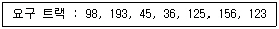
- 36
- 45
- 98
- 123
(정답률: 53%)
80. 파일 디스크립터가 가지고 있는 정보가 아닌 것은?
- 파일의 구조
- 접근 제어 정보
- 보조기억장치상의 파일의 위치
- 파일의 백업 방법
(정답률: 71%)
5과목: 정보통신개론
81. 다음 중 정보통신시스템에서 통신처리 기능과 가장 밀접한 것은?
- 각종 정보처리 기능
- 속도 및 프로토콜 변환 기능
- 변복조 및 다중화 기능
- 통신망의 효율적인 관리 기능
(정답률: 43%)
82. 정보통신시스템의 구성 요소에 해당하는 용어가 잘못 표기된 것은?
- DTE : 데이터 단말장치
- CCU : 공통신호장치
- DCE : 데이터 회선종단장치
- MODEM : 변복조장치
(정답률: 65%)
83. 데이터 전송에서 한 문자의 전송마다 스타트 비트와 스톱 비트를 삽입하여 전송하는 방식은?
- 동기식
- 비동기식
- 베이스밴드식
- 혼합동기식
(정답률: 65%)
84. LAN의 특성에 대한 설명 중 틀린 것은?
- 음성, 데이터, 화상정보를 전송할 수 있다.
- LAN 프로토콜은 OSI 참조모델의 상위층에 해당된다.
- 전송방식으로 베이스밴드와 브로드밴드 방식이 있다.
- 광케이블 및 동축케이블도 사용 가능하다.
(정답률: 76%)
85. 다음 중 광섬유 케이블의 특성과 거리가 먼 것은?
- 저손실성이다.
- 광대역성이다.
- 무유도성이다.
- 보안성이 취약하다.
(정답률: 83%)
86. 수신기 버퍼의 오버플로우(overflow)를 예방하기 위한 것으로 데이터 프레임의 전송률을 조정하는 것을 무엇이라고 하는가?
- 흐름 제어
- 접속 제어
- 오류 제어
- 비트 제어
(정답률: 76%)
87. 변조속도가 1200[baud]일 때, 쿼드비트(Quadbit)를 사용하는 경우 전송속도는 몇 [bps]인가?
- 1200
- 2400
- 3600
- 4800
(정답률: 74%)
88. HDLC(High-Level Data Link Control)에 대한 설명 중 옳지 않은 것은?
- 비트지향형의 프로토콜이다.
- 제어부의 확장이 가능하다.
- 데이터링크 계층의 프로토콜이다.
- 통신방식으로 전이중방식이 불가능하다.
(정답률: 79%)
89. LAN을 분류할 때 네트워크 위상(topology)에 따른 것이 아닌 것은?
- Bus형
- Star 형
- Packet 형
- Ring 형
(정답률: 84%)
90. 아날로그 신호를 디지털 전송회선으로 전송하기 위해 디지털 형태로 변환시키고, 또한 디지털 형태를 원래의 아날로그 신호로 복구시키는 장치는?
- 모뎀
- 코덱
- 멀티플렉서
- 집중화기
(정답률: 55%)
91. TCP/IP 상에서 운용되는 응용 프로토콜이 아닌 것은?
- FTP
- Telnet
- SMTP
- SNA
(정답률: 63%)
92. 다음 중 HDLC의 데이터 전달모드가 아닌 것은?
- 표준 균형모드
- 정규 응답모드
- 비동기 균형모드
- 비동기 응답모드
(정답률: 51%)
93. 다음 중 디지털 정보의 변조방식에 해당되지 않은 것은?
- ASK
- FSK
- PSK
- VSB
(정답률: 78%)
94. IP 프로토콜(IP : Internet Protocol) 장비에 해당하는 것은?
- 데이터링크 계층
- 네트워크 계층
- 트랜스포트 계층
- 세션 계층
(정답률: 60%)
95. 다음 중 인터네트워킹(Internetworking) 장비에 해당하지 않는 것은?
- 브리지
- 라우터
- 게이트웨이
- 모뎀
(정답률: 54%)
96. 다음 중 음성신호를 PCM(pulse code modulation) 방식을 통해 송신측에서 디지털 신호로 변환하는 과정이 옳은 것은?
- 표본화 → 양자화 → 부호화
- 부호화 → 양자화 → 표본화
- 양자화 → 표본화 → 부호화
- 표본화 → 부호화 → 양자화
(정답률: 75%)
97. 다음 중 IEEE 802.6에서 표준화된 이중 버스로 구성된 통신망의 규격은?
- FDDI
- DQDB
- QAM
- CSMA/CD
(정답률: 48%)
98. ITU-T 권고안 시리즈 중 전화망을 통한 데이터전송에 관한 사항을 규정한 것은?
- I
- Q
- V
- X
(정답률: 63%)
99. 이동통신망에서 통화중인 이동국이 현재의 셀에서 벗어나 다른 셀로 진입하는 경우, 셀이 바뀌어도 중단 없이 통화를 계속할 수 있게 해주는 것은?
- 핸드오프(hand off)
- 다이버시티(diversity)
- 셀분할(cell splitting)
- 멀티플렉싱(multiplexing)
(정답률: 76%)
100. 다음 중 두 개체 간에 통신 속도를 조정하거나 메시지의 전송 및 순서에 대한 특성을 가리키는 프로토콜의 기본요소는?
- 구문(Syntax)
- 의미(Semantics)
- 타이밍(Timing)
- 패킷(Packet)
(정답률: 48%)